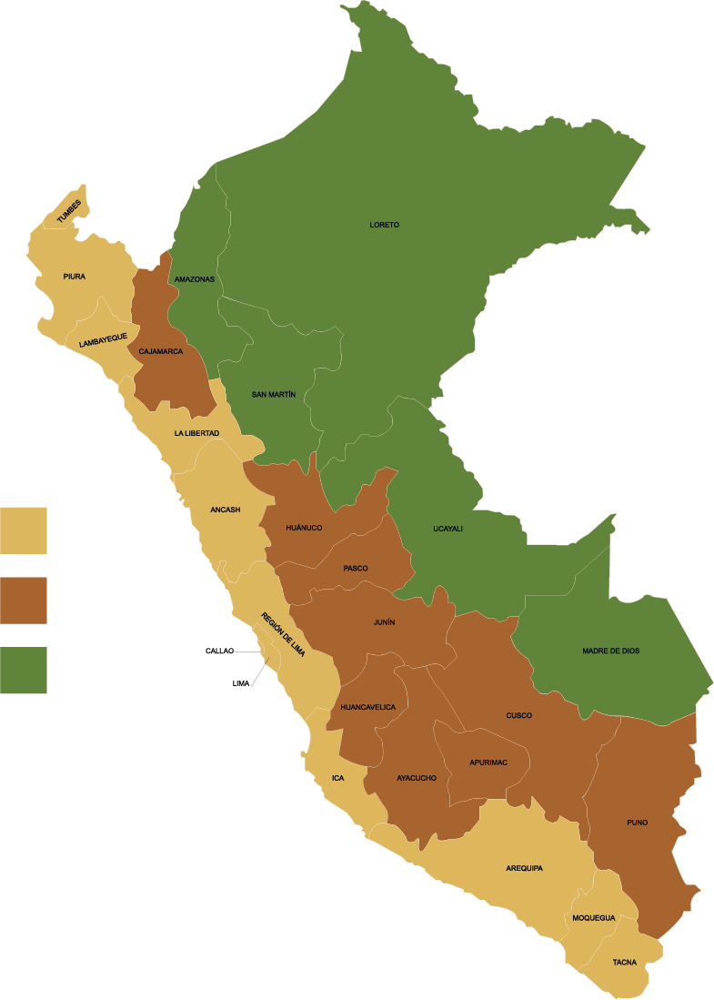
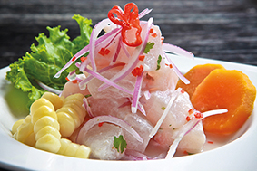
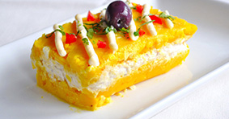
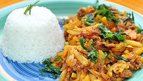
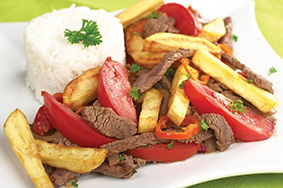
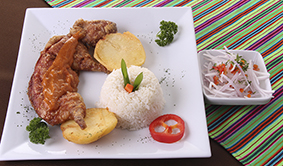

Plats típics
Perú es pot dividir en tres parts: Costa, Serra i Selva. Depenent d’on és vagi tindran plats típics del la zona o sinó plats típics del Perú modificant un poc els ingredients i els seus sabors.
Ceviche: és un dels plats més exquisits del Perú. És un peix cru amanit en llimona (peruà) ceba, sal, ají llim i pebre. La preparació és única i molta gent el considera un plat afrodisíac.
Papa a la huancaína: és la clàssica entrada peruana en dia festiu. Sense cap dubte un dels plats més rics i de fàcil preparació. Consisteix en papes grogues, ají, llet i pa. El plat original es prepara amb batan, però actualment ha estat reemplaçat per la liquadora.

Causa farcida de pollastre o tonyina: és un plat molt popular a força de patata groga, ají verd i choclo (un blat de moro peruà). La preparació admet diverses variants. Actualment se li afegeix maionesa.
Olluquito amb charqui: aquest plat és un dels més representatius, ja que té dos ingredients que són exclusivament peruans: olluco, un tipus de papa que creix en els Andes i charqui, carn seca de llama o alpaca, els quals són productes propis del Perú.
Llom saltat: un plat singular que neix de la barreja del menjar peruà i xinesa-cantonesa. La tècnica de la cocció a la paella i la singular preparació ho fa un dels plats criolls més comandats.
Picant de Cuy: aquest plat es menja des de que era l’època inca i va ser un dels àpats més importants. Així mateix, el cuy és un animal que conté molta proteïna, posseeix omega 3 i no té greix. La preparació varia depenent de la regió.
